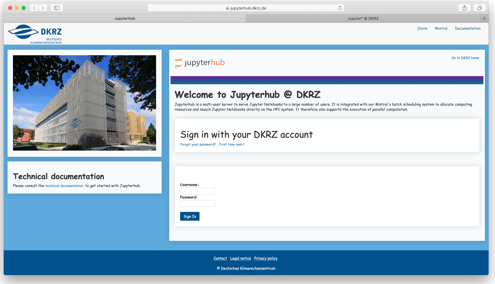
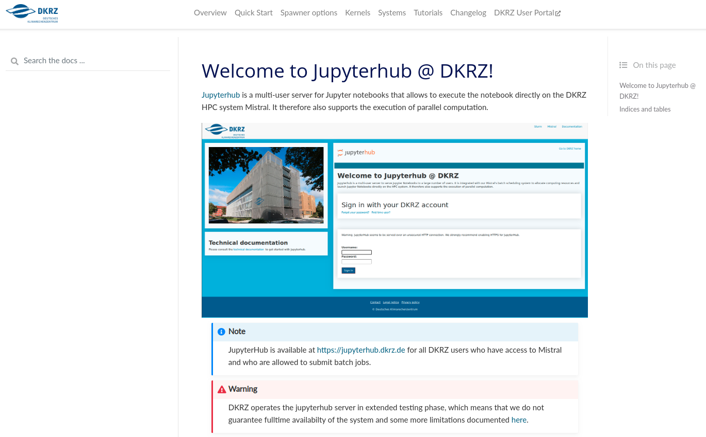

Jupyter * @ DKRZ
Interactive (Super) computing on Mistral
Dr. Sofiane Bendoukha
Deutsches Klimarechenzentrum (DKRZ)

* : hub/notebooks/lab/kernels
About me
- Background: Computer science
- Department: Application Support
-
Currently:
- backend developer –> interactive computing
- containers
Introduction
>>> import this
The Zen of Python, by Tim Peters
Beautiful is better than ugly.
Explicit is better than implicit.
Simple is better than complex.
Complex is better than complicated.
What is, Why Jupyter? (1)
Python is popular
https://www.tiobe.com/tiobe-index/

What is, Why Jupyter? (2)
 |
 |
web application that allows you to create and share documents that contain live code, equations, visualizations.
Jupyter Notebook on HPC
-
Local:
Using Anaconda, anyone can install and run Jupyter Notebooks on their local computer. -
HPC: Infrastructure-specific
- security concerns
- shared file systems
- metadata transactions
1. SSH setup
2. Jupyter notebook setup
3. SSH to the remote system and start Jupyter notebook
4. Start Jupyter notebook with --no-browser and --port
5. Create an SSH "local port forward"
6. Open Jupyter notebook with your "Local" browser
What we provide @ DKRZ
-
Convenient way: Jupyterhub
- user-friendly
- full user support
- continuous maintenance and update
-
Old school: Single Jupyter notebooks (ssh based)
./start_jupyter [Options]- limited support (?)
- port forwarding can be annoying
-
Jupyterhub advanced spawner?

Roadmap

What’s new?
How it works?

|
|
How it works on Mistral?
Spawning workflow
GUI

REST Web services
| Announcements (Admin) | Accounts 
|
Documentation

Any input/request is welcome!
JupyterLab (1)
JupyterLab (2)
switching between classic/lab

Agenda
Introduction- Spawning process
- Kernels
- Extensions
- Q & A
Spawner options
Overview

Preset options form
| Choose from the list | Available profiles 
|
Advanced options form (1)
Advanced options form (2)
Advanced options form (3)
 |
 |
 |

Named servers
|
Stop your server

Kernels

What is happening in the background

Default system kernels
| Kernel | Source module |
|---|---|
| Python 2 | python/2.7.12 |
| Python 2 | anaconda2/bleeding_edge |
| Python 3 | anaconda3/bleeding_edge |
| Python 3 unstable | python3/unstable |
"We will have a new Python about every half year, which is going to be called 'python3/YYYY.MM-compilerversion'. The first one is 'python3/2020.02-gcc-9.1.0'".
Bring your own environment (1)
- Conda
% mkdir $HOME/kernels % conda create --prefix $HOME/kernels/tensorflow ipykernel python=3.x % source activate $HOME/kernels/tensorflow % python -m ipykernel install --user --name tensorflow --display-name="tensorflow" % conda deactivate - Virtualenv
% python -m pip install --user virtualenv % python -m virtualenv --system-site-packages /path/to/new-kernel % source /path/to/new-kernel/bin/activate % pip install ipykernel % python -m ipykernel install --user --name new-kernel --display-name="new-kernel"
Bring your own environment (2)
Default
|
Customized
|
more advanced: use executable scripts! --> check the doc
Using/Changing the kernels

Using/Changing the kernels
Debugging
- preset spawner
- jupyterhub_slurmspawner_preset_{slurm_job_id}.log
- advanced spawner
- default: jupyterhub_slurmspawner_advanced_{slurm_job_id}.log
- customized: you_name_it.log
Extensions
Jupyter extensions (1)
Nbextensions

Jupyter extensions (2)
Enabling/Disabling extensions
Enable:
jupyter nbextension enable <nbextension require path>
Example:
jupyter nbextension enable appmode/main
Disable:
jupyter nbextension disable <nbextension require path>
Jupyter extensions (3)
Dask Labextension

Jupyter extensions (4)
https://github.com/oschuett/appmode

A Jupyter extensions that turns notebooks into web applications.
Jupyter extensions (5)
Do you need more?
Voila 
|
JupyterLab Git 
|
TensorBoard
|
… support@dkrz.de
“The JupyterLab development team is excited to have a robust third-party extension community. However, we do not review third-party extensions, and some extensions may introduce security risks or contain malicious code that runs on your machine.”
Future work
- Sharing services/extensions
- shared notebooks repositories (Git/hub/lab)
- external sharing services
- WPS
- Enhanced spawning queue for Jupyterhub
- More dedicated system kernels and extensions (e.g. ML)
- Speed up loading Python packages (HLR4)
- ContainerIze Jupyterhub
- Binder for Mistral?
Feedback? Questions?
- Jupyterhub @ DKRZ
- Technical documentation
- support@dkrz.de